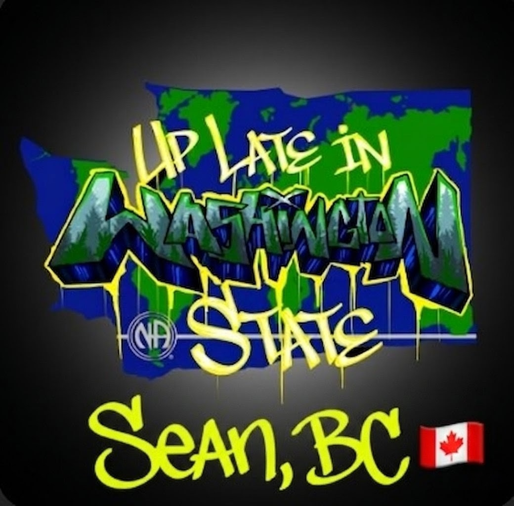

Late-night recovery with a steady weekly rhythm.
Welcome to our virtual NA home group, a safe and judgment-free space to find a new way to live. You don't have to do this alone anymore—join us 7 days a week on Zoom and we'll save you a virtual seat.

Public page
Meeting basics
Zoom meeting room
Use the direct Zoom room link below for the meeting entrance page.
https://us02web.zoom.us/j/7937507408Rotating calendar
Weekly meeting formats
Community
Events and service notes
Official resources
Literature links
NA World Services literature
Use this public section to point members and newcomers to official literature resources.
Open official literaturePublic group documents
You can later add your own public flyers, format overviews, and newcomer-friendly downloads here.
Protected resources
Members and service files
Trusted servant hub
Use this area as the public gateway to externally protected folders for scripts, guidelines, admin documents, and internal archives.
Open members landing pageSuggested folders
- Chairperson scripts
- Secretary checklists
- Group guidelines
- Admin and treasury files